运行时环境
ASPNETCORE_ENVIRONMENT环境变量
- ASP.NET Core使用ASPNETCORE_ENVIRONMENT环境变量。
- ASP.NET Core应用启动时读取ASPNETCORE_ENVIRONMENT环境变量的值，并保存在IHostingEnvironment.EnvironmentName里。
- 环境变量ASPNETCORE_ENVIRONMENT可以是任何值。但是ASP.NET Core默认值有3个：
- Production
- Development
- Staging
- 如果ASPNETCORE_ENVIRONMENT没有被设置，那么会默认取值为Production。
环境变量的设置
- 在项目属性中
右键BlogDemo.Api项目->属性->调试，可以看到如下页面，环境变量的预设值为Development。
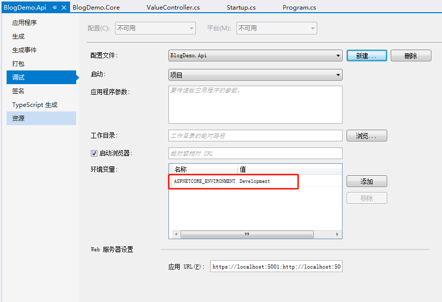
- 在launchSettings.json中修改
在BlogDemo.Api项目下，展开Properties，打开launchSettings.json文件，环境变量就配置在profiles下对应的项目名中。
注意：项目属性调试中的环境变量取值是launchSettings.json配置的环境变量，如果launchSettings.json中把环境变量修改为“Production”，则项目属性调试中的环境变量也会对应修改。
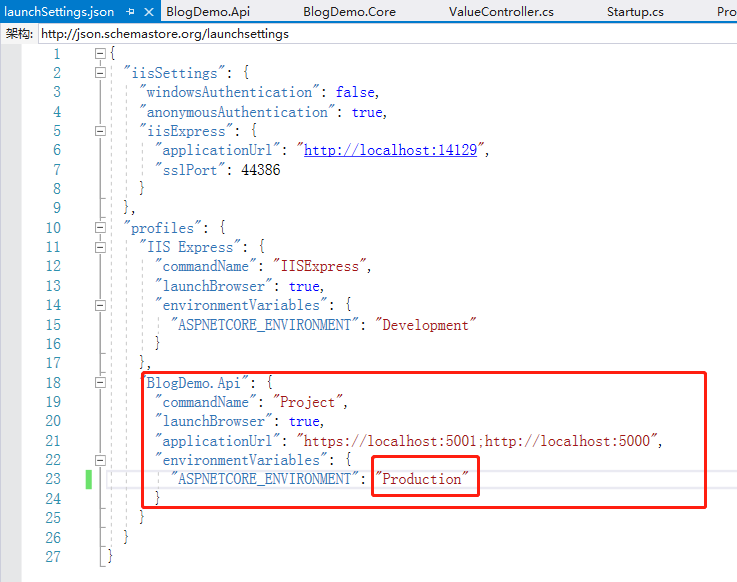
- 在系统里设置环境变量。
判断环境变量
在Startup.cs文件中，使用Configure方法的env参数判断当前的环境变量
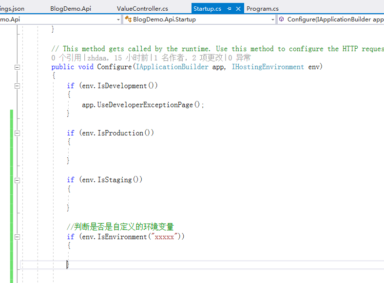
使用基于环境的Startup类
- Startup{环境名称}
- StartupDevelopment
- StartupProduction
- StartupStaging
- 在Program里配置IWebHostBuilder时使用UseStartup(IWebHostBuilder, String)，而不是UseStartup\<Startup>(IWebHostBuilder)。
- String参数是StartupXxx所在的Assembly的名字。
- 也可以根据环境在同一个Startup类里面定义不同的方法，具体请查阅官方文档。
在项目中添加一个StartupDevelopment.cs文件和StartupProduction.cs文件。
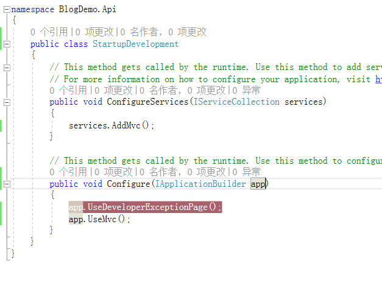
修改Program.cs中的代码，把UseStartup\<Startup>()改为.UseStartup()。
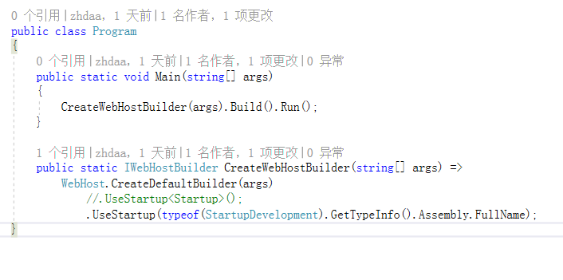
打开launchSettings.json，把IIS的相关配置去掉，保留控制台配置。
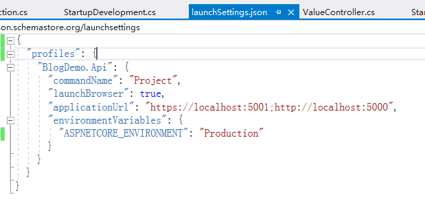
点击运行，看到程序进入了环境变量为Production的StartupProduction类方法的断点中。
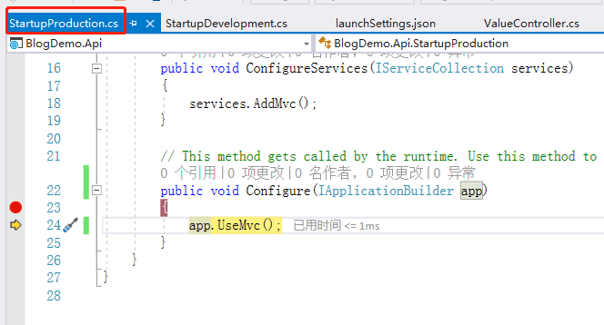
支持HTTPS
使用HTTPS
微软建议所有的ASP.NET Core应用程序都调用HTTPS重定向中间件，来把所有的HTTP请求重定向为HTTPS。
在Startup中：
- ConfigureServices方法注册，并配置端口和状态码等：
- services.AddHttpsRedirection(…)
- Configure方法使用该中间件：
- app.UseHttpsRedirection()
注册并使用HTTPS重定向中间件
在StartupDevelopment类中修改代码。
在ConfigureServices方法中添加如下代码，注册HTTPS中间件。
services.AddHttpsRedirection(options => |
在Configure方法中添加代码，使用HTTPS中间件。注意使用HTTPS重定向中间件的顺序，必须在UseMvc之后。
app.UseHttpsRedirection();//使用HTTPS重定向中间件 |
完整代码如图所示。
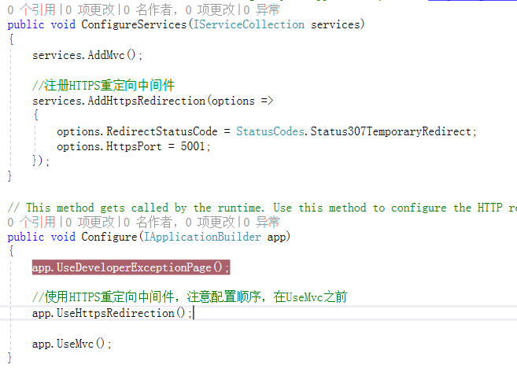
在launchSettings.json文件中修改代码。
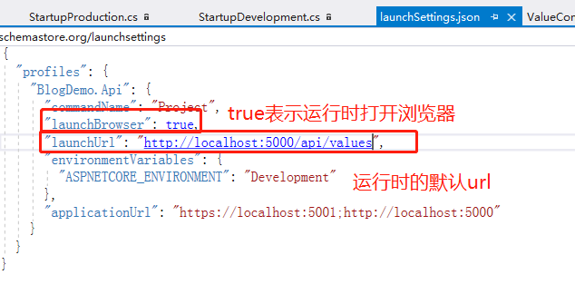
运行程序，可以发现，打开的http://localhost:5000/api/values跳转到https://localhost:5001/api/values了。
说明HTTPS重定向中间件起作用。
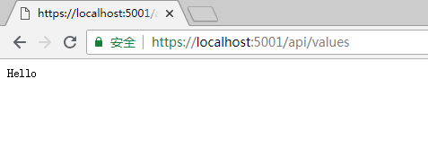
HSTS
微软建议在生产环境下启用HSTS（HTTP Strict Transport Security Protocal）
在Startup中：
- ConfigureServices方法注册和配置HSTS：
- services.AddHsts(…)
- Configure方法是用该中间件：
- app.UseHsts()
在StartupProduction类中使用HSTS：
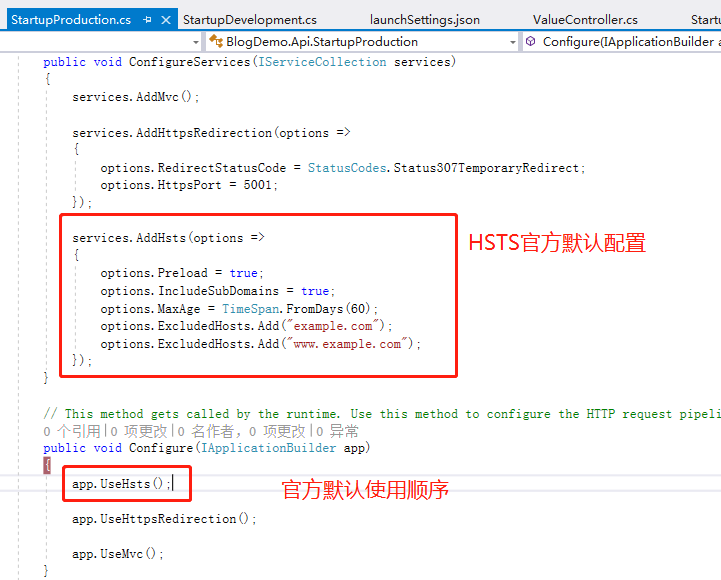
集成Entity Framework Core
未完待续。。。